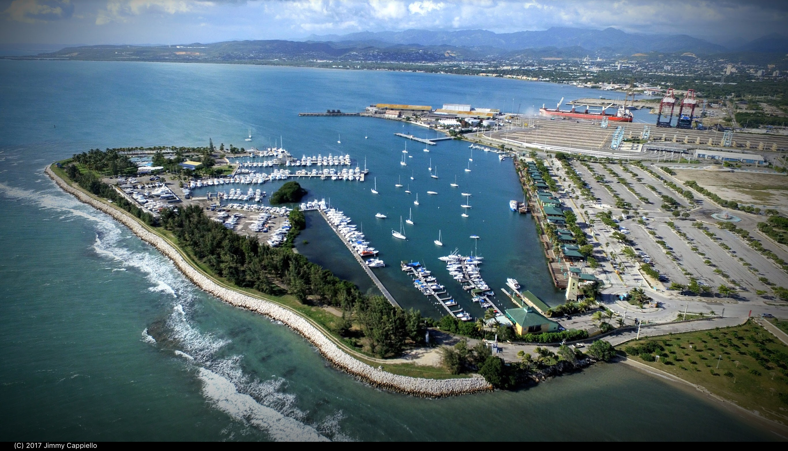
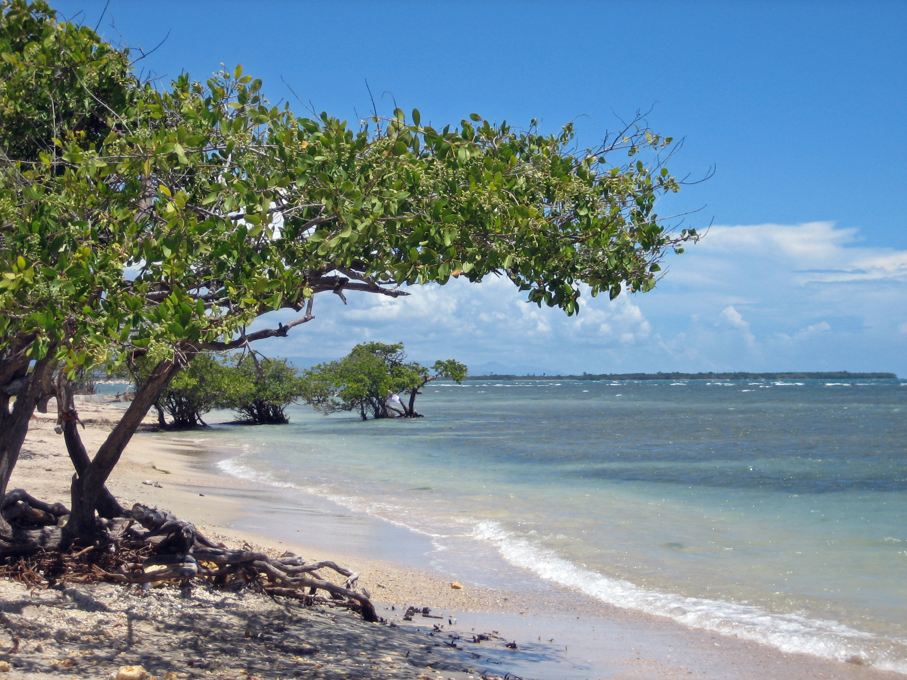
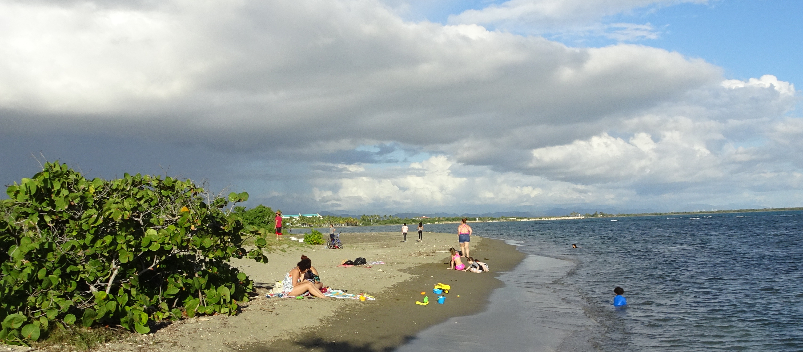

Momentos en el mar
Una mirada visual al ambiente costero de Ponce: el malecón, la playa y los paisajes que hacen especial cada salida al mar.

La Guancha desde el aire
Una vista amplia del área recreativa y su conexión con el mar.

Playa de La Guancha
Un espacio costero tranquilo para disfrutar el ambiente del sur.

Costa de Ponce
El paisaje marítimo que acompaña las rutas recreativas.